INICIO
¿QUIENES SOMOS?
PRODUCTOS
SERVICIOS
CONTÁCTENOS
PRODUCTOS
Confiteria
Lacteos
Mascotas
Aseo
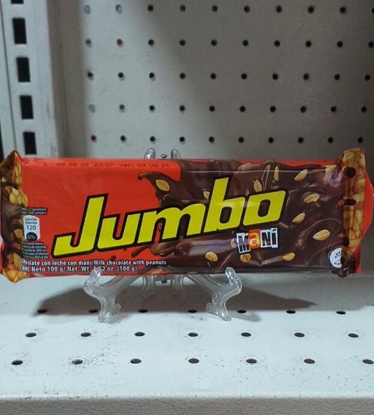
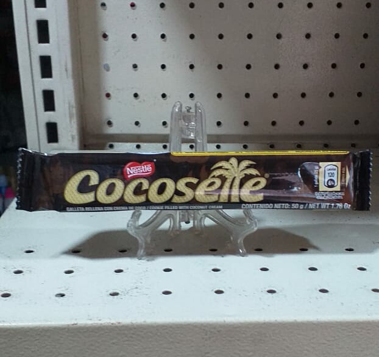
Chocolatina Jumbo mani , una fuente de energía con trozos de maní.
Galletas sabor a coco deliciosas y muy ricas a la vez.
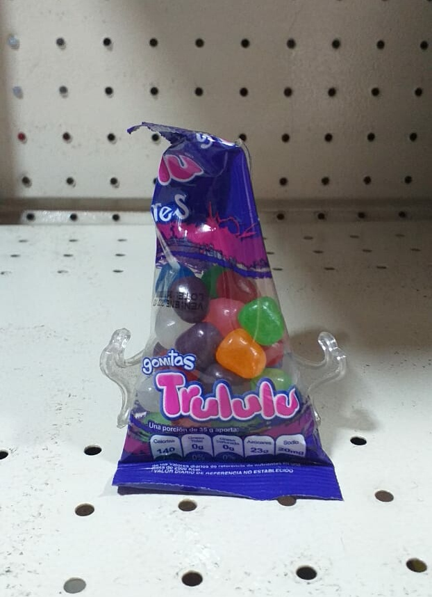
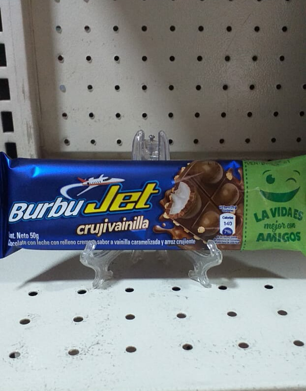
Gomitas en bolitas deliciosas.
Chocolatina recubierta con chocolate blanco, una buena fuente de energía.
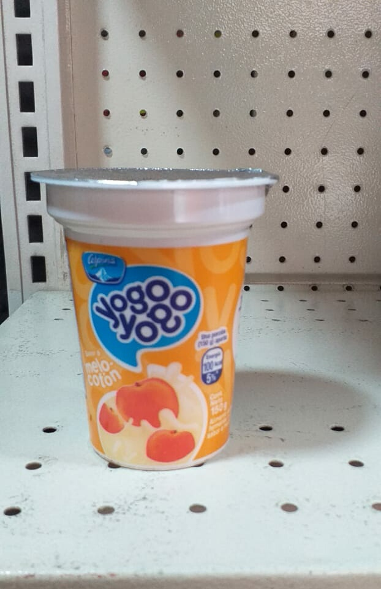
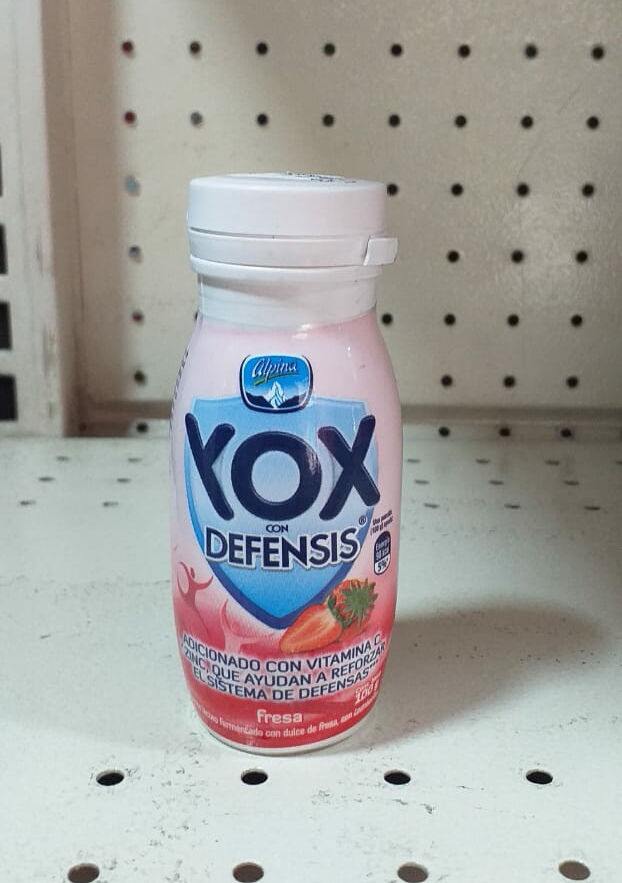
Yogurt de melocotón delicioso y nutritivo a la vez.
Yogurt especialmente para subir las defensas y refrescante.
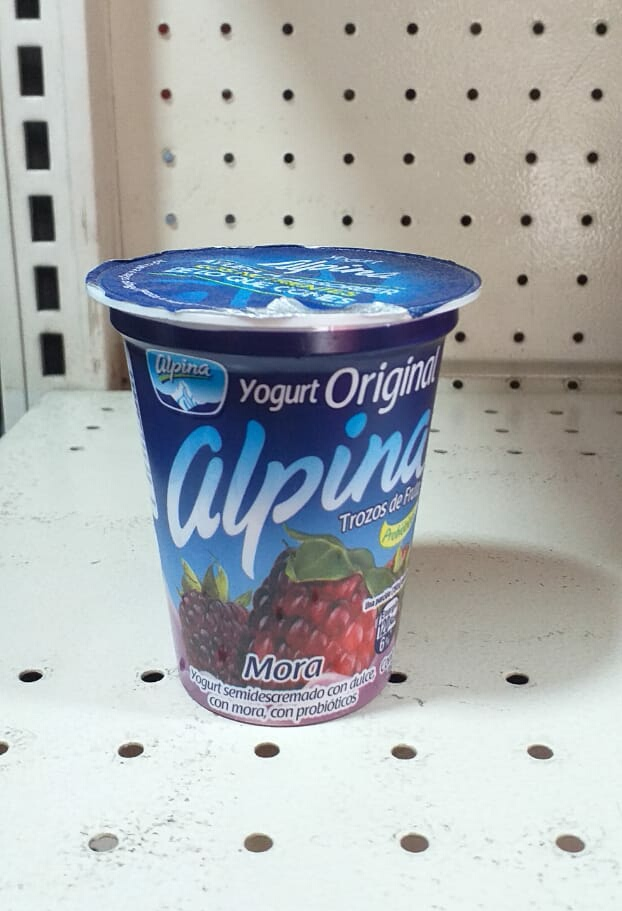
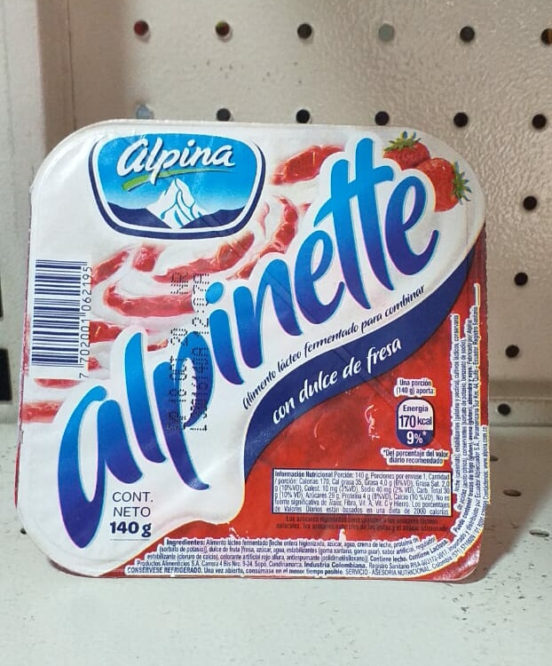
Yogurt con sabor a Mora, hecho con probioticos y una buena fuente de calcio.
Yogurt con dulce de fresa ... para esos antojitos.
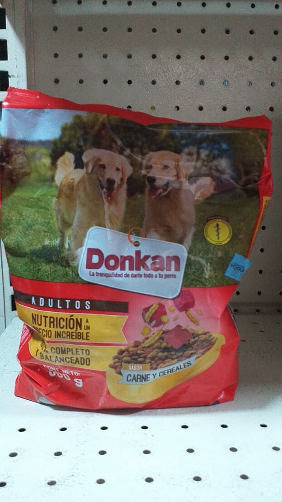
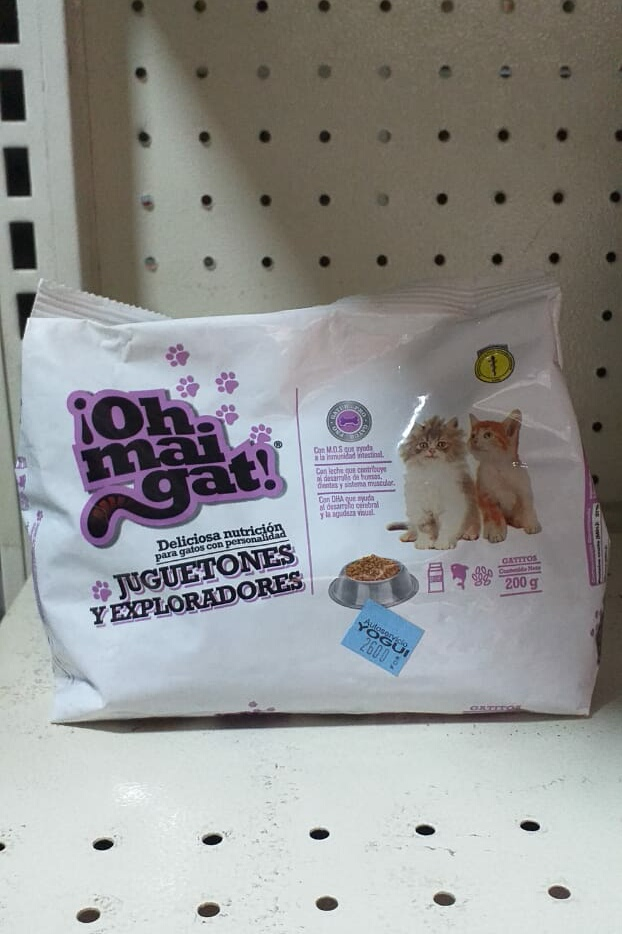
Comida para perros adultos de diversos sabores con mucha nutrición para tu can.
Comida para gato de diversos sabores para darle la mejor nutrición.
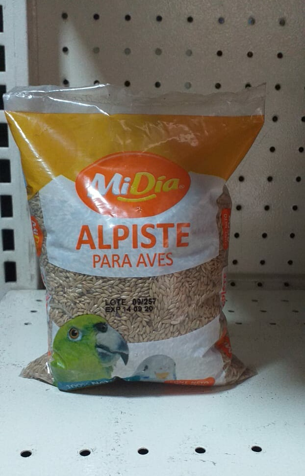
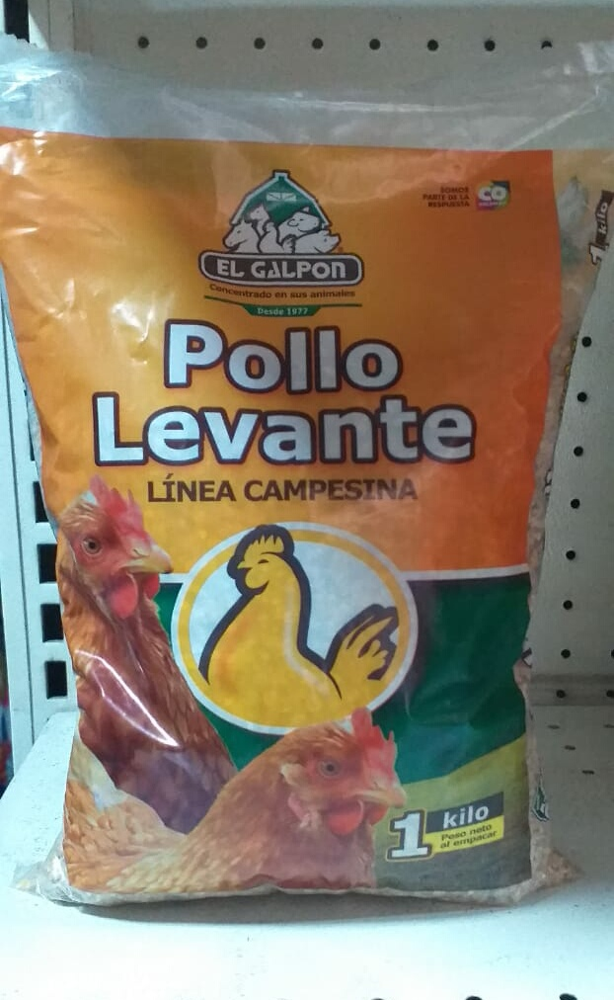
Comida de aves lo que necesita tu ave.
Comida de gallina , línea campesina hecho por los nuestro mejores campesinos.
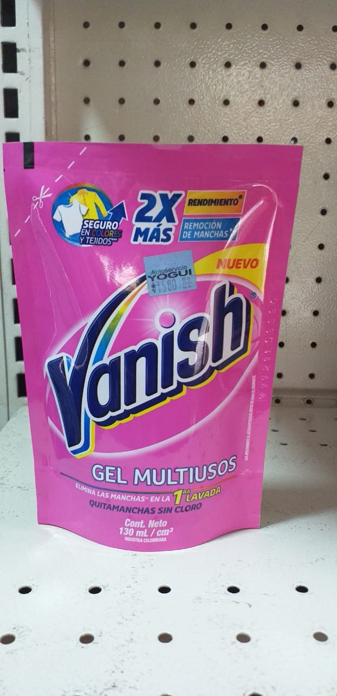
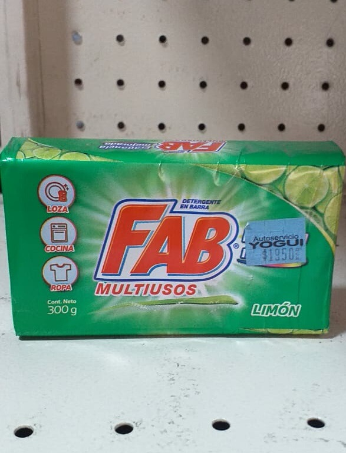
Quita manchas para el cuidado y duración de la ropa.
Jabón multiusos para limpiar y despercudir superficies.
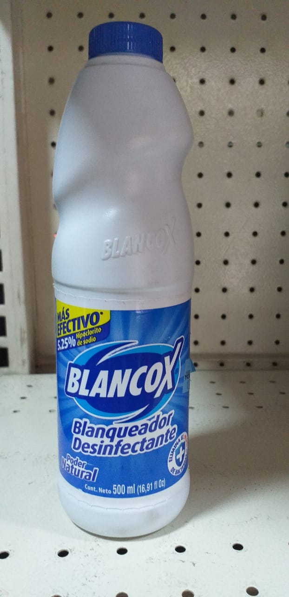
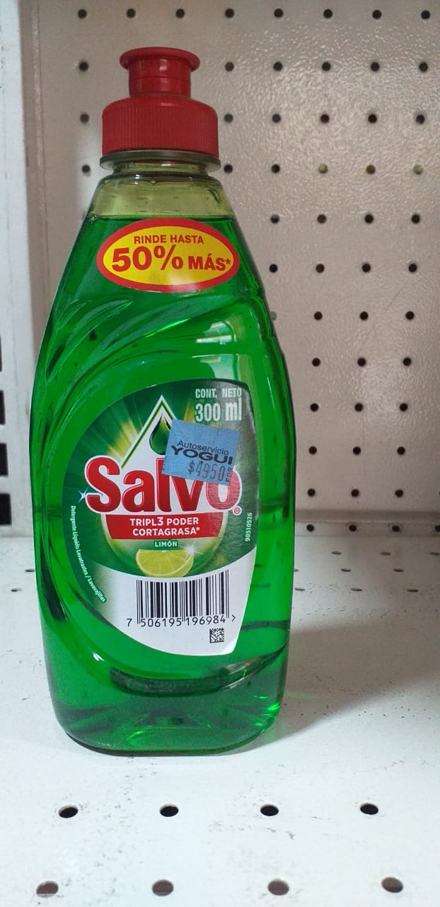
Producto de limpieza para desinfectar y limpiar tu hogar.
Un producto de limpieza para lavar la loza.